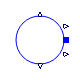

Partial models for controllable sources behind impedance
Extends from Modelica.Icons.BasesPackage (Icon for packages containing base classes).
| Name | Description |
|---|---|
| baseVoltageSource | Base model for voltage sources behind an impedance |

OpenIPSL.Electrical.Sources.SourceBehindImpedance.BaseClasses.baseVoltageSourceBase model for voltage sources behind an impedance
This partial model is used to develop variants of a voltage source with an internal voltage source and internal impedance whose magnitude and angle. The initial values of the internal voltage source magnitude and angle are calculated based on the impedance and power flow data. It is based on [Du2021], with the difference that the internal impedance includes a resistance and not only a reactance.
Extends from OpenIPSL.Electrical.Essentials.pfComponent (Partial model containing all the parameters for entering power flow data).
| Name | Description |
|---|---|
| Power flow data | |
| S_b | System base power [V.A] |
| V_b | Base voltage of the bus [V] |
| fn | System frequency [Hz] |
| P_0 | Initial active power [W] |
| Q_0 | Initial reactive power [var] |
| v_0 | Initial voltage magnitude [1] |
| angle_0 | Initial voltage angle [rad] |
| displayPF | Display power flow: |
| Voltage Source parameters | |
| M_b | Voltage Source base power rating (MVA) [V.A] |
| R_a | Internal source resistance, pu, system base [1] |
| X_d | Internal source d-axis reactance, pu, system base [1] |
| Parameter mask | |
| enableS_b | Enable S_b in parameter list |
| enableV_b | Enable V_b in parameter list |
| enablefn | Enable fn in parameter list |
| enableP_0 | Enable P_0 in parameter list |
| enableQ_0 | Enable Q_0 in parameter list |
| enablev_0 | Enable v_0 in parameter list |
| enableangle_0 | Enable angle_0 in parameter list |
| enabledisplayPF | Enable displayPF in parameter list |
| Name | Description |
|---|---|
| p | Instantiation of graphical component PwPin_p |
| Emag | Internal voltage magnitude |
| Edelta | Internal voltage angle |
| Emag0 | Initial value of the internal voltage source magnitude |
| Eang0 | Initial value of the internal voltage angle |